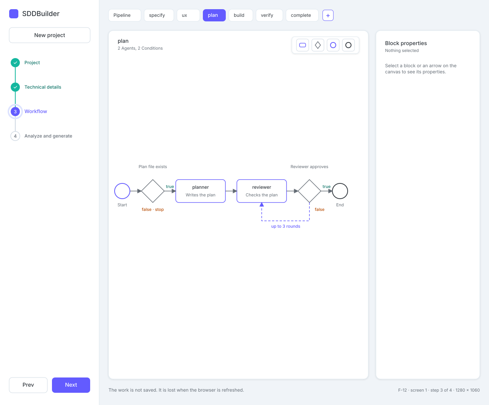
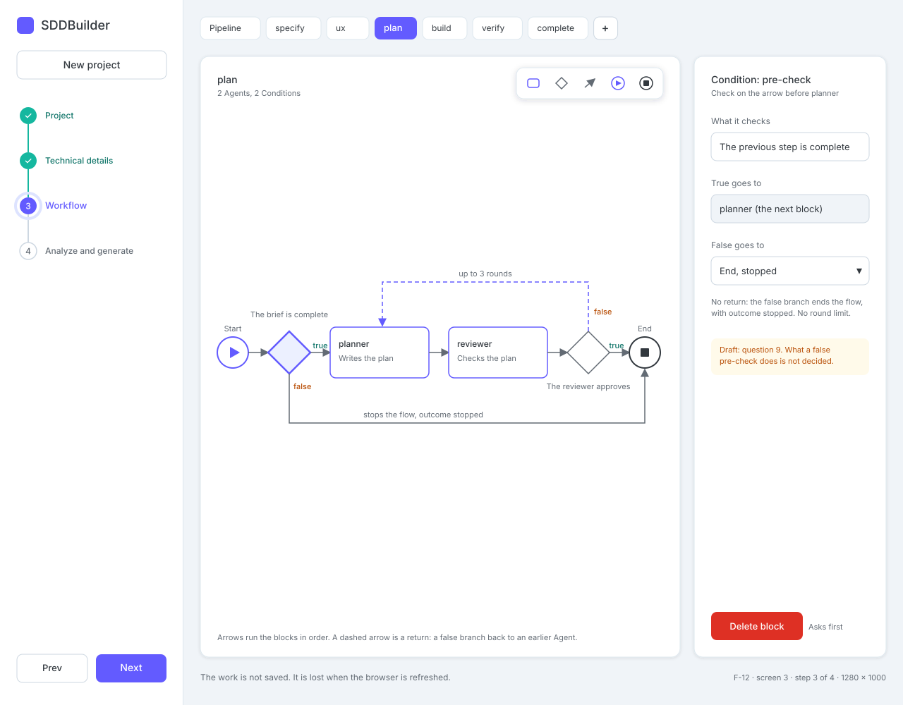
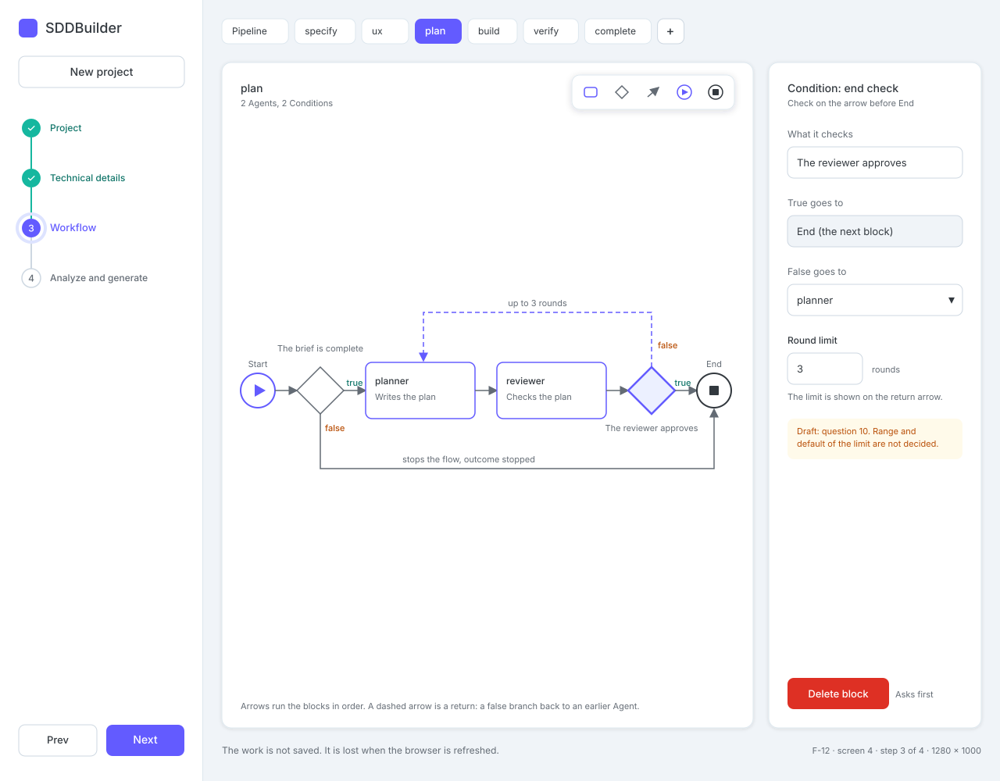
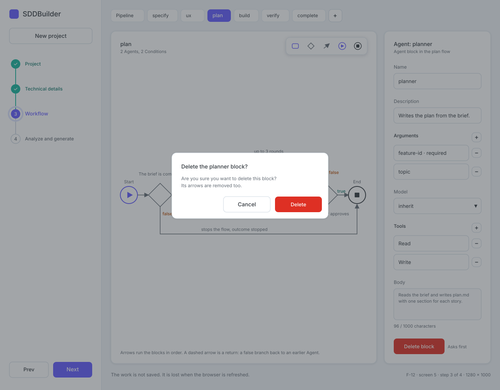
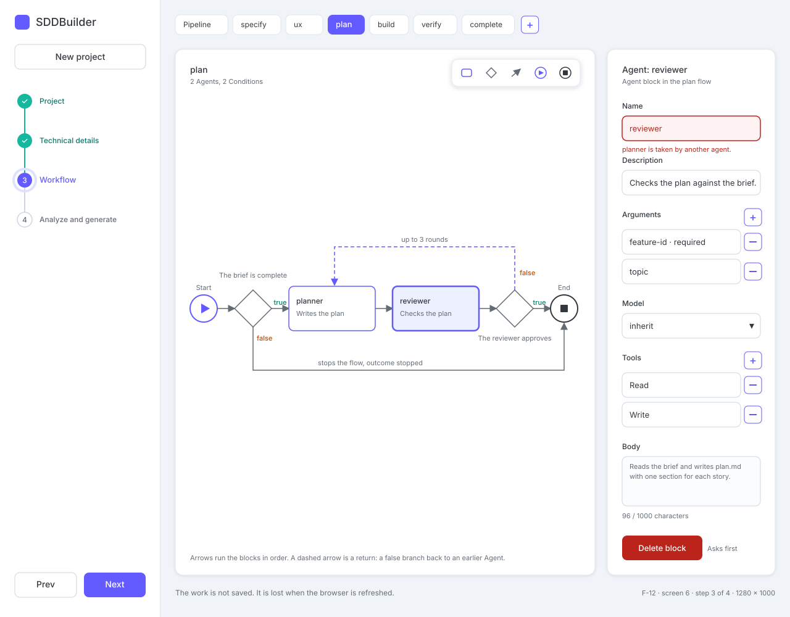

02 An Agent selected
The planner box selected: name, description, arguments as rows with + and minus, model, tools as rows, and the body with its counter. There are no move buttons; Delete is at the foot.

Step 3 of the wizard, the flow tab, drawn as a canvas like the Pipeline tab. Start and End are circles, Agents are boxes joined by arrows, and a Condition is a diamond on an arrow with a true and a false branch. A false branch can return to an earlier Agent with a round limit. A toolbox with icon buttons floats over the canvas. Every screen uses the frame of F-07. Wireframes only; read screens.md for the legend, the coverage and the schema questions.
Start, the pre-check, planner, reviewer, the end check and End, with the return from the end check to planner (dashed, up to 3 rounds) and the pre-check's false branch to End (stopped). End is selected: its outcome and produced artifact are on the right.

The planner box selected: name, description, arguments as rows with + and minus, model, tools as rows, and the body with its counter. There are no move buttons; Delete is at the foot.
The pre-check on the arrow between Start and planner: what it checks, the true branch (read-only, the next block), and the false branch, which ends the flow as stopped. No return, so no round limit.

The end check between reviewer and End: what it checks, true to End, false returns to planner with a round limit of 3 rounds, which is also written on the return arrow.

The confirmation for the planner block: "Delete the planner block?", the sentence that its arrows go too, Cancel and Delete. The whole screen is dimmed behind it, the left panel included.

The reviewer block is renamed to planner, which another agent of the pipeline already uses. The name field shows the error style, the reason sits beneath it, and the saved name reviewer is kept on the field and on the canvas box.
